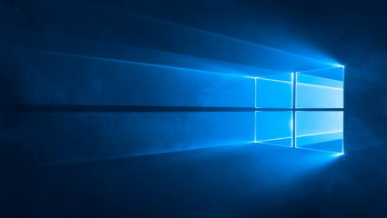
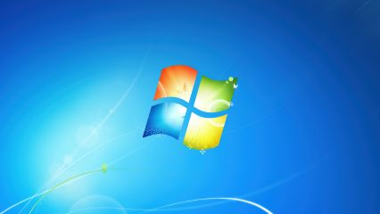

-----|Spartan7300's Windows Archive|-----
Windows 11 Pro Download
Windows 10 XOS x64 Download
Windows 10 Downloads
My favourite
Windows 10 Pro x64 Download (Placeholder)
Windows 10 LTSC x64 Download (Placeholder)

--------------------------------------------------------------------------------------------------------------
Windows 10 XOS x64 Download
Windows 8.1 Pro x64 Download
Everyones favourite, lol
Windows 8.1 Pro x64 Download
Windows 8 Pro x64 Download
Windows 8 Pro x64 Download
Windows 7 Ultimate x64 Download
Comes with Service Pack #1
Download Windows 7 Ultimate x64 ISO
Win7 Kernal Extensions

Windows Vista Ultimate x64 Download
Windows Vista Ultimate Download
Windows XP Pro x64 Download
WIndows XP Pro Download
Windows 98 Second Edition Download
Windows 98 Download